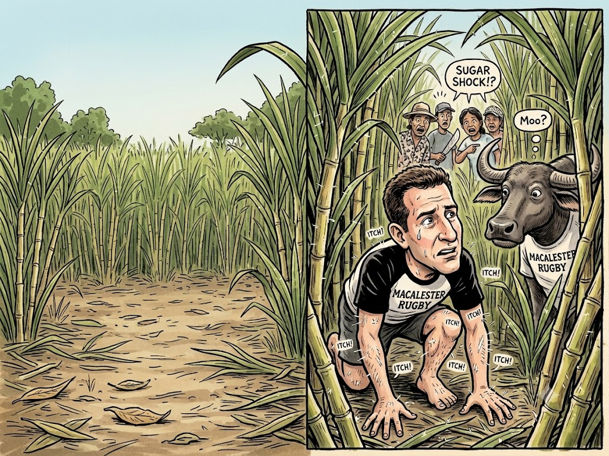

Tips for Entering the Monster
Originally written August 2010 • Uploaded to Facebook on Aug 4, 2010, 6:57 AM

Sugarcane is fundamentally a species of grass. Because of this classification, many outsiders naively assume that the entire trajectory—from dropping stalks into the dirt all the way to processing refined sugar and exquisite regional rum—is a simple, straightforward operation. Hardly. Being a grass, sugarcane reproduces by cultivating genetic copies of itself; once a stalk reaches structural maturity, it sloughs off pieces onto the floor, hoping they will be interred by the elements to satisfy their intense thirst for soil and water. In the wild, this happens naturally. It could even happen in the comfort of your own backyard, provided you granted sugarcane a chance.
Commercial cultivation requires a more deliberate approach. Laborers take a mature sugarcane stalk—which closely resembles a long, solid piece of bamboo—and hack it into smaller sections. These seed pieces, roughly ten inches in length, are then planted individually into the furrows. Left to their own devices over consecutive generations, these strains eventually begin to resemble your inbred next-door neighbor, displaying genetic decay and vulnerability to disease. This is precisely why agricultural operations must periodically redevelop clean strains inside laboratories via controlled cross-pollination to reset the biology.
On the plantation where I am currently deployed—where we plant upwards of seventy hectares of cane annually—the timeline is a rigorous endurance marathon. You must prepare the raw ground, drop the seed stalks, wait for the early sprouts to breach the surface, systematically audit the fields to identify blank spots, replant the failures, and then engage in endless, brutal weeding cycles. Finally, when the cane reaches towering maturity, comes the harvest—which is easily the juiciest part of the deal. Pun intended. Having been involved in nearly every phase of this layout, I can verify that it demands heavy, uninterrupted human interaction. The planting requires a continuous physical hustle as every individual stalk segment must be manual hoed over with earth. Replanting requires opening a fresh breach in the hard dirt, dropping a replacement cane, and sealing it up. Weeding forces you to swing a heavy hoe, a scythe, or a massive machete around the clock—instruments wielded with equal intensity by men and women alike. Amazingly, I have yet to see a single worker accidentally hack themselves on the line.
I must say a few specific words regarding the machetes themselves. Virtually every soul living on this plantation owns one. They deploy them to cut cane, slice oranges, clean fresh fish, clear brush, and handle stray trees—or even unruly husbands and wives, depending on the afternoon. These blades are entirely hand-forged on site from discarded pieces of quarter-inch industrial steel, cut, shaved, and ground into distinct profiles. Most are styled in a half-moon shape, honed to a razor edge, and almost universally coated in a layer of deep rust.
The truly beautiful element of each machete—locally called a *spading*—is that the handles are custom-crafted by the owners themselves out of native tropical hardwoods salvaged from the forests. While the scientific names of the timber escape me, the grain is rich and vibrant, ranging from deep charcoal browns to brilliant light oranges. The owners furnish these grips in configurations ranging from a standard straight knife utility style to a dramatically curved, slightly Moorish, slightly slasher-film silhouette. Wielding a blade stretching twelve inches or more, these tools are highly efficient at decimating the stubborn weeds that happily return the moment the tropical rains pass.
The weeding phase that I want to dissect today. Not only is it exceptionally labor-intensive, but it demands a highly keen eye and an immense volume of patience. Most of the invasive plants competing with the crop are alternative grasses, sharing identical visual lines with the sugarcane itself, alongside wild grapes, morning glories, and parasitic vines. You have to spot them tucked against the base of the crop, slice them into miniscule pieces, or wrench them entirely out of the topsoil by the roots to rot under the sun.
But there are advanced weeds here that have evolved over centuries of monoculture. These specific variants anchor heavy taproots deep into the subsoil, matching the exact consumption rate of the sugarcane. Flaunting a green and slightly purple hues, they grow at the exact same velocity as the crop. They physically cling to the sugarcane stalks, winding upward to steal the available sunlight by maintaining a slight height advantage while structurally rooting themselves directly into the cane’s skin. While they sound borderline evil on paper, their true survival asset lies in their elaborate mimicry. In a mature sector packed with dense stalks, it requires absolute optical focus to differentiate the weed from the cane. Often, the only way you know your blade struck a false target is the physical resistance: sugarcane offers a clean, dense thump against the iron, followed immediately by a spray of sweet, raw sugar onto the soil—a detail the weeds cannot replicate.
The ultimate defense mechanism of these mimic weeds— and the painful reason I learned to spot them real quick—is that their stems are entirely carpeted in microscopic white needles. They look exactly like fine fiberglass shavings or a dusting of talcum powder. The moment your bare skin brushes the stalk, these invisible shards pierce your hands, embedding themselves in your epidermis to trigger an absolutely horrific case of the itches. The irritation is incredibly long-lasting; I’ve endured encounters where my skin burned for an entire week following a brief field shift.
If you imagine yourself dropped into New York City during peak rush hour—navigating down a packed avenue where you are forced to constantly duck, shove, and contort your frame against a sea of faces, limbs, and physical obstacles—then you have experienced a fair approximation of weeding inside a mature field. A few weeks after planting, the stalks begin to skyrocket. Within a couple of months, the sugarcane transforms into a wall of towering giants, easily clearing three meters, with four-meter specimens turning up regularly. These massive blocks, flanked by long, razor-sharp leaves drooping on all sides, enclose the alleys in a way that makes you feel completely microscopic. The core dilemma is that these towering sectors remain highly vulnerable to invasive weeds, forcing us to plunge right into the thick of the grid to clear them out.
To secure basic entry into the narrow, suffocating crevices between these monsters, you must swing your machete left and right continuously just to clear a path, or drop into a deep, agonizing crouch, maintaining that posture for hours on end. Sugarcane, for all its structural majesty, is a nasty, aggressive beast. Its long, serrated leaves fan out wide to capture every available drop of solar energy, meaning they are scraping against your face every second you are in the row. The blades branch out from the root clear to the canopy, ensuring that no matter your height, your skin is subjected to continuous abuse. These leaves slice your arms, scrape your neck, and leave you itching like a mangy dog. And to think, you walked into the field assuming you were its friend.
As you wedge yourself deeper into these claustrophobic agricultural "tunnels," the density of the crop prevents you from moving with any velocity or navigating very far without physical resistance. And then, you still have to track down the hidden weeds. Picture yourself crawling through the mud, slicing and dicing your way forward, only to be systematically slashed and cut by the canopy. The most frustrating aspect occurs when you push past a dense cluster of leaves only to have them spring back like a trap, whacking you squarely across the face. So in you venture, equipped with either a long-handled hoe or a hand-forged knife, stepping deep into the dark hallways of sugar.
After an hour of continuous hacking, a strange phenomenon occurs: you suddenly hear absolutely nothing around you. The towering walls of cane, flanked by serrated blades from root to sky, completely muffle ambient audio and disorient your senses in a matter of minutes. You stand straight up, trying to clear the leaves away from your eyes, arms, and legs, only to realize you are completely isolated on the grid, enclosed by giants that only want to whack you some more. They swallow human voices entirely. Your singular operational hope lies in the geometric reality that because sugarcane is planted in strict, linear rows, sooner or later, if you just march in a straight line, you will hit an open access path and regain your bearings. The experience can be deeply maddening and dangerous simply because you lose your patience and start going trigger-happy with a massive, razor-sharp blade. Chopping wildly left and right, you lose all underlying respect for the crop and the weeds alike, desperately operating on pure instinct just to break through for a gasp of fresh air and a glimpse of sunlight. Now, take that exact madness and repeat it for six straight hours in overwhelming tropical heat and suffocating humidity. I am sure that by now, the romantic lifestyle of sugarcane farming sounds incredibly appealing to you.
Alas, I’ve learned firsthand that sugarcane cultivation is not all gentle smiles and honest sweat on the brow. Today, entirely unaware that our assignment involved entering the deep tunnels, I made the amateur mistake of skimping on my gear, turning up to the sector wearing basic shorts and a thin t-shirt. Along the path, my seasoned coworkers were eyeballing my bare limbs with highly amused, funny expressions, but I proudly paid them no attention. After choosing to brave the depths of the monster under-dressed, I emerged a couple of hours later covered in dozens of deep slashes across my arms and legs, bleeding quietly from multiple points and itching like an absolute dog. Fortunately, I carry a specialized clinical cream formulated for severe rashes and poison ivy, so the burning has finally subsided—but I walked away thoroughly convinced that bare skin has absolutely no business inside those fields.
As our daily operations roll forward, tracking the progress of the stalks we dropped into the mud a few weeks ago, I continue to learn valuable lessons from my own mistakes. Even though my departure from the island of Negros looms on the horizon, I feel confident that the landscape still holds a few more secrets to extract—and perhaps a few more water buffalo to ride. Whatever bottlenecks await me in the final weeks, I know with absolute certainty that I have stared directly into the blades of the sugarcane monster and survived.